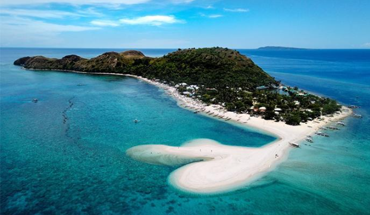
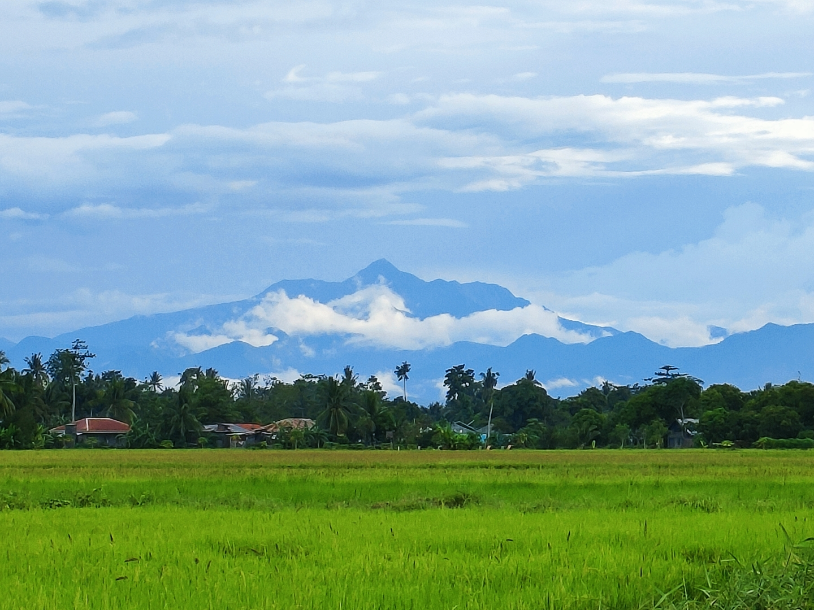

Featured Destinations
📍 Top Destinations You Shouldn’t Miss
Antique is filled with hidden treasures waiting to be explored. Here are some of the must-visit destinations that showcase the province’s beauty:

Malalison Island
Nestled off the coast of Antique, Malalison Island is a picture-perfect paradise of rolling hills, powdery white sand, and crystal-clear waters. Its untouched beauty makes it a favorite among travelers looking for peace, quiet, and a closer connection to nature.
Things to Do:
- Hike to Scenic Viewpoints
- Swim and Relax on the Beaches
- Experience Simple Island Life
Climb gentle hills to see panoramic views of the island and surrounding sea—a perfect spot for sunrise or sunset photography.
Calm waters make it ideal for swimming, snorkeling, or simply floating while soaking in the sun.
Meet local fishermen, explore small villages, and enjoy fresh seafood straight from the sea.
"It’s a peaceful alternative to more commercialized islands, offering authentic, tranquil island vibes."

Bugtong Bato Falls
Bugtong Bato Falls is Antique’s hidden gem for adventure seekers and nature lovers alike. This multi-tiered waterfall cascades through lush greenery, creating natural pools perfect for swimming and photography.
Things to Do:
- Trek Through Nature Trails
- Swim in Refreshing Pools
- Explore Scenic Rock Formations
Follow shaded paths lined with tropical plants and occasional wildlife sightings to reach the falls.
The natural basins offer a cool escape from the tropical sun, ideal for a relaxing dip after hiking.
Wander along the rocks and discover hidden nooks for meditation or quiet reflection.
"Perfect for photographers, adventurers, and anyone looking to reconnect with nature’s beauty."

Mount Madja-as
Rising majestically over Panay Island, Mount Madja-as is not only one of the highest peaks in Antique but also a site of cultural and mystical significance. This mountain is steeped in local folklore and legends, adding a magical layer to every hike.
Things to Do:
- Hiking and Trekking
- Biodiversity Spotting
- Cultural Significance
Trails range from moderate to challenging, perfect for both casual hikers and seasoned climbers.
Home to endemic plants, birds, and wildlife, every step offers a glimpse into Antique’s rich ecosystem.
Learn about local myths, sacred areas, and rituals performed by nearby communities.
"For hikers, nature enthusiasts, and cultural explorers, Mount Madja-as offers a journey unlike any other."

Tibiao Kawa Hot Bath
The Tibiao Kawa Hot Bath is a one-of-a-kind wellness experience. Imagine soaking in a giant metal wok heated over a wood fire, surrounded by lush forest and the sounds of a flowing river—pure relaxation!
Things to Do:
- Relaxing and Therapeutic
- Cultural Immersion
- Pair With Adventure
The warm bath soothes tired muscles, making it the perfect recovery after hiking or river tubing.
Locals prepare the bath using traditional methods, providing insight into Antique’s customs and heritage.
Combine with river trekking or outdoor activities for the ultimate rejuvenation.
"This cultural wellness experience is a must for travelers seeking both relaxation and a unique local tradition."